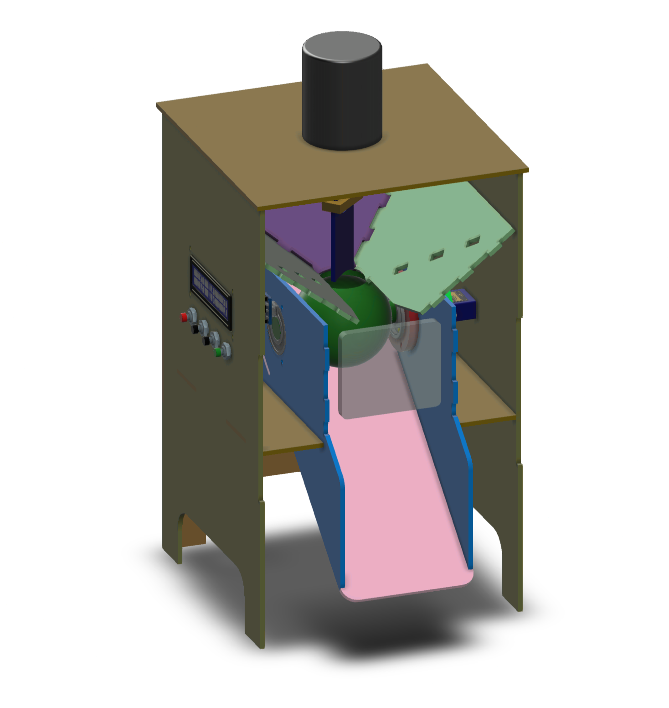
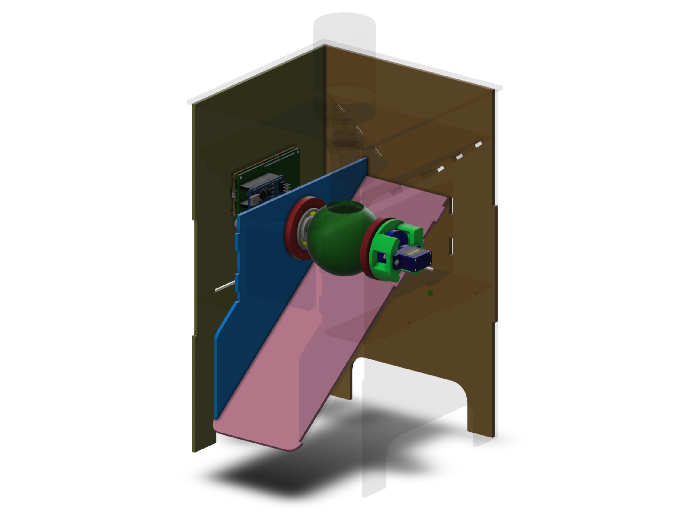
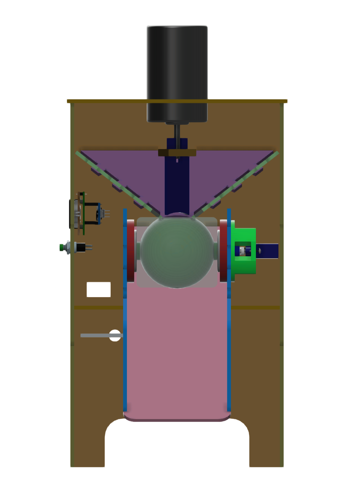
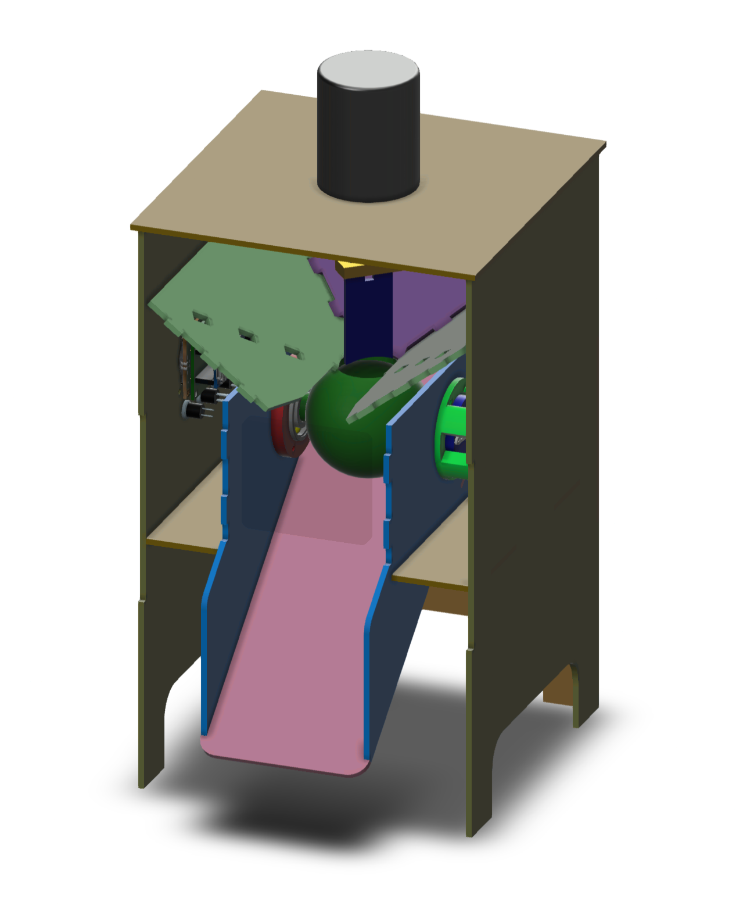
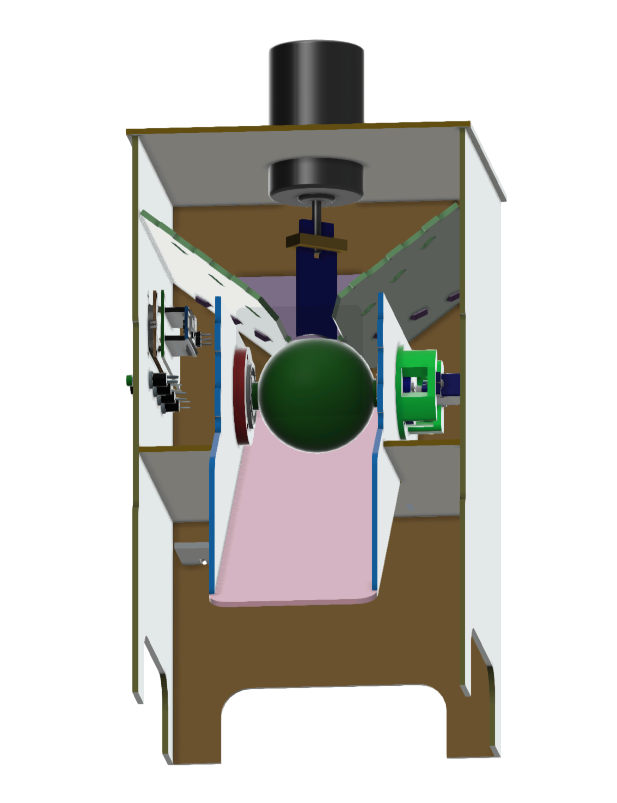
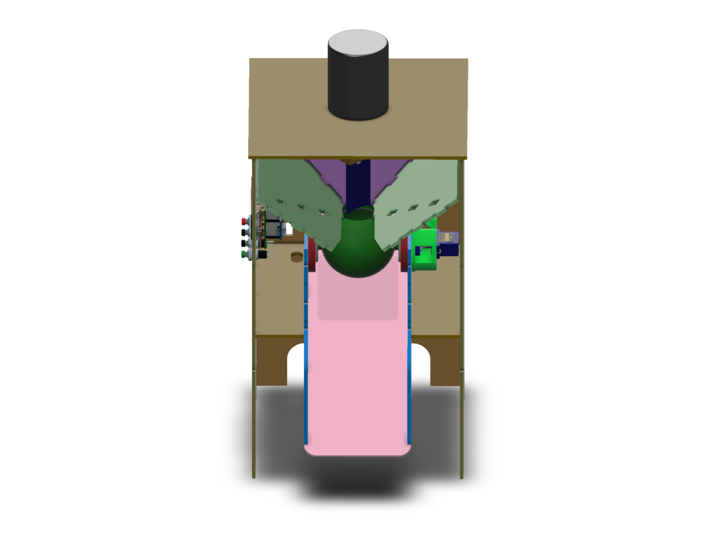

This project consists of a food reservoir, that automates serves the food at the specified times of the day. It is designed for pet food such as dog or cat kibble. It's interface is thought to allow the user to program as many as many times of the day and as many servings needed depending on the size and customs of the animal.

The design started from approaching a real life problem, considering the needs of possible users, and thought to be easily manufactured and affordable.
The device consist of a rotating sphere with a hole in the upper side. The sphere volume is around half a cup, and is filled with kibble by a hopper situated above the sphere, and the latter should rotate around 180° to pour its content onto a ramp, that leads to the user's food recipient. This process is repeated as many times as needed to fulfill the serving size required by the user.
The design it's thought to use accessible and affordable manufacturing methods at the time. It requires mostly laser cutting, which tends to be cheap for prototyping; and also have some parts to be made with 3D printing, such as the sphere.
The tools used for this project are the following:
- AutoDesk Inventor is used for modeling the hardware and consider each component dimensions requirements.
- C++ is used through the Arduino platform for programming both the logic as a state machine, and the interface with the LCD screen.
- Microcontroller programming is done through the Arduino platform, which required the selection of a small microcontroller which also had the required IO ports for the project.
- An actuator-system interface was built to control the servomotor used to rotate the servings sphere.
- An LCD screen is used as interface, displaying a menu that allows to (1) create new programs with time and number of servings, (2) check or delete existing programs, (3) set the current time and (4) pour a serving by command.
- Push buttons are selected as a desired input as a human-machine interface, since its color coding and simplicity makes the system intuitive.

Manufactured Prototype
A functional prototype was successfully manufactured. This allowed to validate the real functionality of the design, from tolerances and building process, to user interaction and the satisfaction of its needs.

The video below shows the prototype running a program to pour 10 portions. One of the hopper walls was temporarily removed for visibility purposes. -- Please forgive the homemade-ness of the video, I'll update it soon (^‿^)
Future Improvements
Although the design is mostly useful, there is room for improvement in some areas.
- The rotating sphere gets stuck sometimes, due to kibble interposing at the border between the hopper and the sphere. This can be addressed by modifying the hopper by using a flexible material or a brush, or using a different mechanism like an screw conveyor.
- Sturdiness: Although the current design is significantly sturdy against most animals, the material and its unions can be improved to withstand biting and stomping of big animals.




